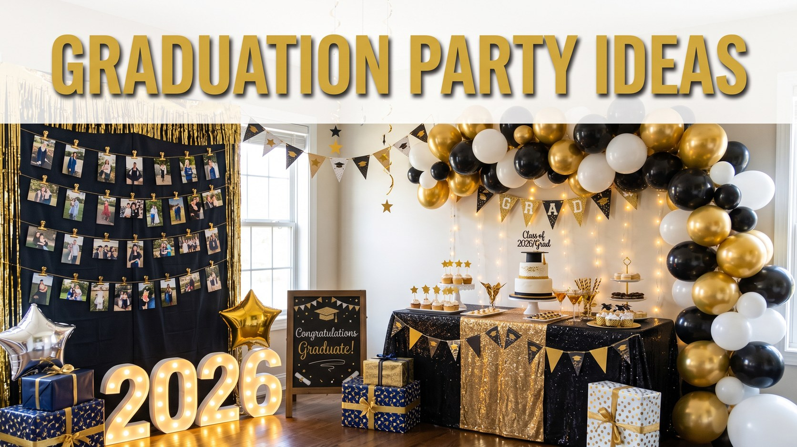

Graduation Party Ideas: Decor, Food & Photo Fun
Published October 10, 2026 · Updated October 10, 2026 · By EventBuzz Team

The ceremony lasts an hour; the party is where the graduate actually feels celebrated. A great graduation party is personal before it is fancy: photos on the wall, favourite songs in the air, and the people who cheered through the hard semesters gathered in one room. This guide keeps everything achievable at home: black and gold decor in simple steps, self serve food, photo booth and display ideas, a memory jar, and budget tips. Plan a week ahead, decorate the day before, and on party day you can celebrate instead of scrambling.
Black and Gold Decor That Always Looks Elegant
Black and gold is the graduation classic: it photographs like a celebration and suits every budget. Start with black as your base: tablecloth, balloons and napkins make gold look expensive instantly. Add gold in layers: foil balloons with the graduation year, a gold banner, ribbon on jars and a light scatter of confetti. White keeps it breathing, through plates, cake and candles. Repeat the pair at the entrance, the cake table and the photo wall. A welcome sign with the graduate’s name and photo sets the tone, and one personal touch in all the shine always wins: the first school photo framed beside the graduation portrait.
Easy Food and Drinks for a Crowd
Graduation parties mix grandparents, teenagers and family friends, so food should be familiar and easy to eat standing. Build a self serve table around one hero dish: sliders, wraps, a pasta bake or a rice dish. Add two finger foods, one salad or fruit platter, and crisps with dips. Label dishes and mark anything spicy. For dessert, the graduation cake plus brownies or cupcakes in black and gold cases is plenty. Drinks need just two jugs: fruit punch or sparkling lemonade, and water with lemon and mint, plus tea and coffee later. Buy double the ice you think you need; warm drinks deflate a party fast.
Photo Booth Fun Without the Rental Price
A photo booth is simply a good backdrop, good light and permission to be silly. Hang a black curtain or sheet on the best lit wall, add a gold banner or balloon garland, and face the booth toward a window so faces glow. Props cost almost nothing at home: a spare cap, sunglasses, a toy trophy, speech bubble boards and signs. Put a phone on a tripod with a self timer, or recruit a keen teenager as photographer. Create one shared album so every photo lands in one place, and the graduate wakes up to the whole party again.
Photo Display Ideas That Tell the Story
The emotional centre of the party is the journey, and photographs tell it best. A timeline display works beautifully: peg photos on string from the first day of school to graduation day, with a tiny year under each. Guests walk the line slowly, laughing and remembering together. A table display also charms: framed photos at different heights on stacked books, beside a school trophy or favourite books. For large families, add a guessing corner with baby photos of the graduate and cousins, and a small prize for the sharpest memory. Use copies, not originals, and give the graduate the full set in an album afterwards.
The Memory Jar and Display Guests Love
Place a large jar or pretty box near the entrance with cards, pens and a sign inviting guests to write a memory, a piece of advice, or a prediction for the graduate’s future. Prompt cards help shy writers: my favourite memory of you is, one thing you should never change is, in five years I see you. Read a handful aloud before the cake, then seal the rest for the graduate to open on the first hard day of the new chapter. This costs almost nothing and routinely becomes the most treasured keepsake of the day.
Small Budget Tips for a Big Heart Party
Spend where guests notice: balloons, a good cake and printed photos. Borrow the rest: serving dishes, trays, jars and fairy lights. Print banners, labels and timeline cards at home; black ink on cream paper looks intentional. Buy supplies in two colours only. Cook one dish, buy one, and gratefully accept what family insists on bringing. If the budget is tight, hold an afternoon party with cake, snacks and drinks instead of a full dinner. The real arithmetic of a great party is the graduate’s joy plus the people who love them, given unhurried time together.
Frequently Asked Questions
What colours work best for a graduation party?
Black and gold is the timeless choice and photographs beautifully. School colours are a meaningful alternative, and white or cream as a third tone keeps either scheme looking clean and elegant.
How much food do I need for a graduation party?
Plan one main dish, two finger foods, one fresh item and cake for the number of confirmed guests, plus a small buffer. Self serve food that holds well, like wraps and pasta bakes, removes most of the stress.
When should a graduation party be held?
The weekend after the ceremony works well, when the graduate has rested and family can travel. Afternoon parties suit mixed age guests and lighter, more affordable menus.
What is a memory jar and why add one?
Guests write memories, advice and predictions on cards into a jar for the graduate. It costs almost nothing, entertains guests all party long, and becomes a keepsake graduates treasure for years.
How can I keep a graduation party affordable?
Borrow serving pieces, print decor at home, limit purchases to balloons and the cake, accept family dishes gladly, and consider an afternoon celebration with cake and snacks instead of a full dinner.
Conclusion
A graduation party succeeds when the graduate feels seen: their story on the wall, their people in the room, their future toasted with love. Keep the plan simple, the colours classic and the memory jar full, and the day will glow for years.
Congratulations, may the party be as bright as their future.